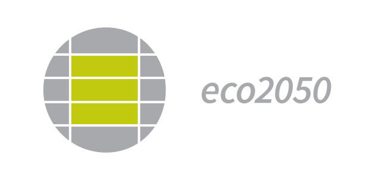

Eigentümerstimme ist die unabhängige, gemeinnützige Initiative, die Eigentümerinnen und Eigentümer in Gebäude- und Wärmeentscheidungen orientiert — neutral, faktenbasiert, auf Augenhöhe. Getrennt von Anbieterinteressen, getragen von denen, die die Folgen tragen.
Kommunen, Stadtwerke, Energieberater, Hausverwaltungen — jeder bringt seinen Teil ein, aus seiner Rolle und mit seinem Blickwinkel. Doch die Entscheidung über 20 bis 30 Jahre trägt der Eigentümer, oft ohne unabhängige Begleitung. Ihre Folgen — Nebenkosten, Modernisierungsumlage, CO₂-Kosten — tragen am Ende auch die, die im Gebäude wohnen: die Mieterinnen und Mieter. Diese Lücke schließen wir gemeinsam — als kollektive Stimme dort, wo der Einzelne bisher allein stand.
Eigentümerstimme arbeitet auf zwei Feldern, die zusammengehören: das Recht in der Gemeinschaft — und die Frage, wie eine Gemeinschaft überhaupt gut entscheidet. Neutral, anbieterunabhängig, gemeinnützig.
Wer darf was, worauf habe ich Anspruch, wie entscheidet die Gemeinschaft richtig?
Wie trifft eine Gemeinschaft eine Entscheidung, die dreißig Jahre trägt?
Wer konkret vor der Entscheidung steht, braucht mehr als Orientierung: belastbare Zahlen und Werkzeuge für den eigenen Fall. Solche Entscheidungshilfen sind öffentlich verfügbar — als gewerbliche Angebote, außerhalb des Vereins. Eigentümerstimme verkauft nichts und empfiehlt keinen Anbieter.

Weitere Partner · in Gespräch
Welche Regeln, Rechte und Urteile sich ändern und wie Sie sie nutzen — für Beiräte, Eigentümer und Eigentümergemeinschaften. Damit Sie auf Augenhöhe mit der Verwaltung entscheiden.
Einseitiger Kanal: Sie empfangen, ohne selbst zu senden. Ihre Nummer bleibt unsichtbar, jederzeit kündbar. Allgemeine Information, keine Rechtsberatung.
Sie sind Eigentümerin oder Eigentümer, Beiratsmitglied einer WEG, oder Sie arbeiten in Wissenschaft oder Fachöffentlichkeit an der Wärmewende? Die Eigentümerstimme entsteht gerade — und sucht das Gespräch.
dialog@eigentuemerstimme.de